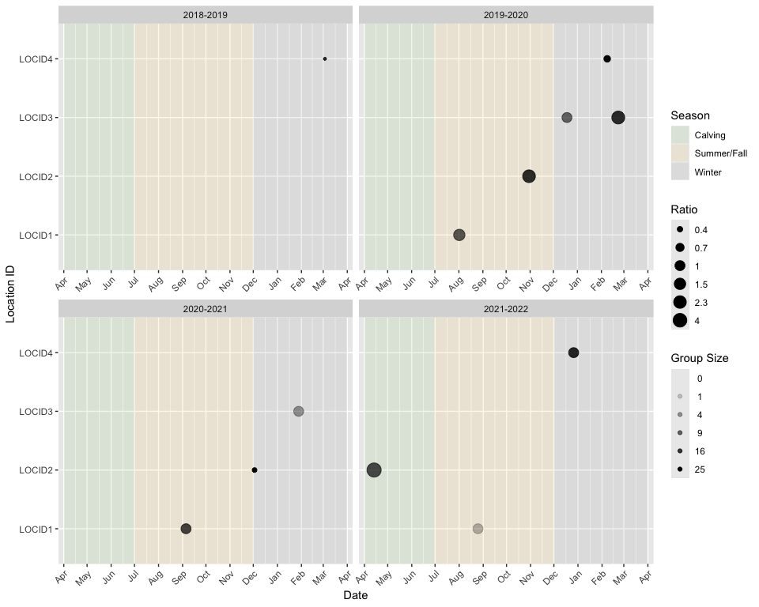
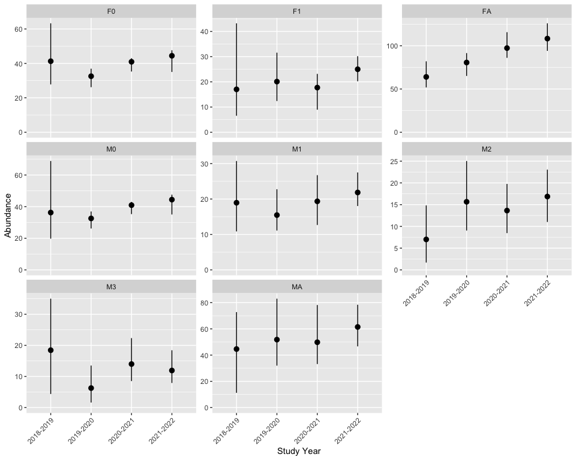

The goal of bisonpictools is to facilitate the visualization and analysis of camera trap data for wood bison herds. The package includes functions to check the correct formatting of data, visualize the data, manipulate and analyse the data using a complex custom-built Bayesian model, and generate predictions of abundances, survival and fecundity rates, and population ratios.
The data are analyzed using an Bayesian Integrated Population Model, which combines a stage-structured population projection matrix model with multiple sources of data into a unified framework, allowing for estimates of age-sex class ratios, population vital rates, and abundances, while maintaining the correct propagation of uncertainty. See the analytical methods vignette for more detail on the modeling approach.
bisonpic Suite
bisonpictools is one of three packages in the bisonpic suite of tools.
bisonpictools provides the underlying visualization and analysis functionality; shinybisonpic is a web-based Shiny app that provides a Graphical User Interface to facilitate data visualization and exploration, and runbisonpic is a local-based Shiny app to set up and run an analysis.
Installation
To install the latest development version of bisonpictools:
install.packages("remotes")
remotes::install_github("poissonconsulting/bisonpictools")And to load the package into the current R session:
Data
bisonpictools accepts data in a specific format for wood bison camera trap locations and events, as well as census and proportion of calf estimates from aerial surveys of the herd. There is a downloadable excel template in each of the Shiny apps that aids the user to populate their data appropriately.
# Example data for locations of camera traps
location_data
#> # A tibble: 4 × 3
#> location_id latitude longitude
#> <chr> <dbl> <dbl>
#> 1 LOCID1 58.0 -112.
#> 2 LOCID2 58.0 -112.
#> 3 LOCID3 58.0 -112.
#> 4 LOCID4 58.0 -112.
# Example data for camera trap events
event_data
#> # A tibble: 12 × 20
#> location_id start_year start_month start_day start_hour start_minute fa
#> <chr> <dbl> <dbl> <dbl> <dbl> <dbl> <dbl>
#> 1 LOCID1 2019 8 1 12 50 2
#> 2 LOCID1 2020 9 5 9 30 3
#> 3 LOCID1 2021 8 25 6 11 1
#> 4 LOCID2 2019 10 30 13 19 2
#> 5 LOCID2 2020 12 2 15 27 10
#> 6 LOCID2 2021 4 13 11 48 1
#> 7 LOCID3 2019 12 18 12 51 2
#> 8 LOCID3 2020 2 22 18 6 3
#> 9 LOCID3 2021 1 28 10 17 1
#> 10 LOCID4 2019 3 3 5 59 8
#> 11 LOCID4 2020 2 8 11 41 10
#> 12 LOCID4 2021 12 26 10 20 5
#> # ℹ 13 more variables: f1 <dbl>, f0 <dbl>, fu <dbl>, ma <dbl>, m3 <dbl>,
#> # m2 <dbl>, m1 <dbl>, m0 <dbl>, mu <dbl>, ua <dbl>, u1 <dbl>, u0 <dbl>,
#> # uu <dbl>
# Example data for census estimate from aerial surveys
census_data
#> # A tibble: 2 × 5
#> census_year census_month census_day census census_cv
#> <dbl> <dbl> <dbl> <dbl> <dbl>
#> 1 2021 3 31 250 0.05
#> 2 2022 3 31 275 0.06
# Example data for proportion of calves estimate from aerial surveys
proportion_calf_data
#> # A tibble: 2 × 5
#> proportion_calf_year proportion_calf_month proportion_calf_day proportion_calf
#> <dbl> <dbl> <dbl> <dbl>
#> 1 2021 3 31 0.2
#> 2 2022 3 31 0.15
#> # ℹ 1 more variable: proportion_calf_cv <dbl>Data Visualization
Use the bpt_plot_ratios() function to visualize ratios in the classified counts from the camera trap events over time.
For example, the calf:cow ratio plotted over all years and locations:
library(bisonpictools)
bpt_plot_ratios(
event_data,
location_data,
numerator = c("f0", "m0", "u0"),
denominator = "fa"
)
Data Analysis
The bpt_analyse() function runs the analysis. The following example uses the built-in example data in the demonstrative “quick” analysis mode.
analysis <- bpt_analyse(
event_data = event_data,
location_data = location_data,
census_data = census_data,
proportion_calf_data = proportion_calf_data,
nthin = 1L,
analysis_mode = "quick"
)View model estimates
Use the bpt_coefficient_table() function to view the model estimates.
bpt_coefficient_table(analysis)
#> # A tibble: 57 × 5
#> term estimate lower upper svalue
#> <term> <dbl> <dbl> <dbl> <dbl>
#> 1 bEtaSummerFall 0.232 0.00955 0.753 4.39
#> 2 bEtaWin 0.101 0.00114 0.484 4.39
#> 3 bFecundityReproductiveFA 1.94 1.63 2.69 4.39
#> 4 bInitialMortalityCalfAnnual[1] -3.75 -5.78 -2.12 4.39
#> 5 bInitialMortalityCalfAnnual[2] -4.56 -7.45 -2.35 4.39
#> 6 bInitialMortalityCalfAnnual[3] -2.87 -7.46 -1.60 4.39
#> 7 bInitialMortalityCalfAnnual[4] -1.09 -6.11 3.64 0.485
#> 8 bKmWeekSummerFall 2.22 0.266 4.42 4.39
#> 9 bKmWeekWin 1.93 1.21 2.63 4.39
#> 10 bMAProportion[1] 0.440 0.258 0.582 4.39
#> # ℹ 47 more rowsMake predictions
Predictions of the total and the class-wise abundances, the fecundity and survival rates, and several ratios of interest are derived from the posterior distribution of the estimated parameters. These can be visualized in tables using the functions with the bpt_predict prefix:
# E.g., Predict total abundance
bpt_predict_abundance_total(analysis)
#> # A tibble: 4 × 4
#> annual estimate lower upper
#> <fct> <dbl> <dbl> <dbl>
#> 1 2018-2019 211. 182. 244.
#> 2 2019-2020 225. 205. 252.
#> 3 2020-2021 254. 230. 280.
#> 4 2021-2022 295. 258. 311.
# Can predict other values using the following functions
bpt_predict_abundance_class(analysis) # Predicts abundance by class
bpt_predict_survival(analysis) # Predicts survival rates
bpt_predict_fecundity(analysis) # Predicts fecundity rate and proportion of reproductive cows
bpt_predict_ratios(analysis) # Predicts population ratiosEach of the above predictions can be plotted in a figure using the bpt_plot_predictions() function.
# E.g., Plot predicted abundances by class
bpt_plot_predictions(analysis, prediction = "abundance-class")
The other predictions can be plotted by executing the following code:
# Plot total abundance
bpt_plot_predictions(analysis, prediction = "abundance-total")
# Plot survival rates
bpt_plot_predictions(analysis, prediction = "survival")
# Plot fecundity rates
bpt_plot_predictions(analysis, prediction = "fecundity")
# Plot ratios
bpt_plot_predictions(analysis, prediction = "ratios")Information
Additional information is available from the bisonpicsuite and bisonpictools websites, which contain the following articles:
-
bisonpicsuite -
bisonpictools
Contribution
Please report any issues.
Code of Conduct
Please note that the bisonpictools project is released with a Contributor Code of Conduct. By contributing to this project, you agree to abide by its terms.
Licensing
Copyright 2023 Province of Alberta
Licensed under the Apache License, Version 2.0 (the “License”); you may not use this file except in compliance with the License. You may obtain a copy of the License at
http://www.apache.org/licenses/LICENSE-2.0
Unless required by applicable law or agreed to in writing, software distributed under the License is distributed on an “AS IS” BASIS, WITHOUT WARRANTIES OR CONDITIONS OF ANY KIND, either express or implied. See the License for the specific language governing permissions and limitations under the License.